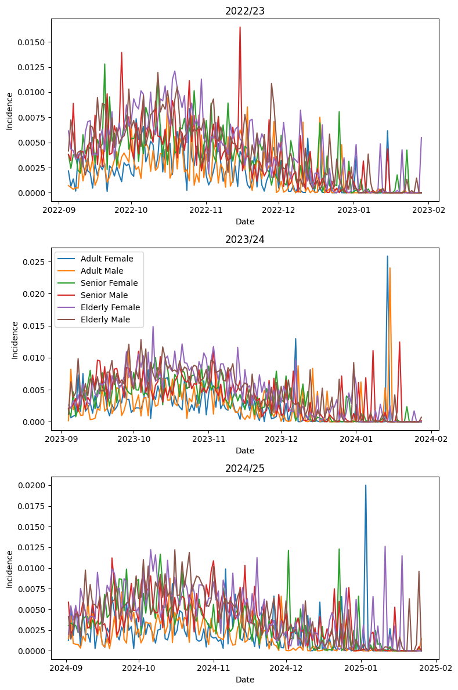
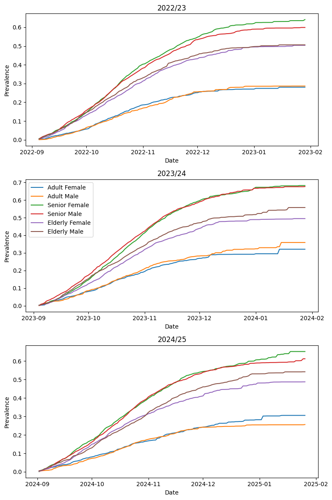
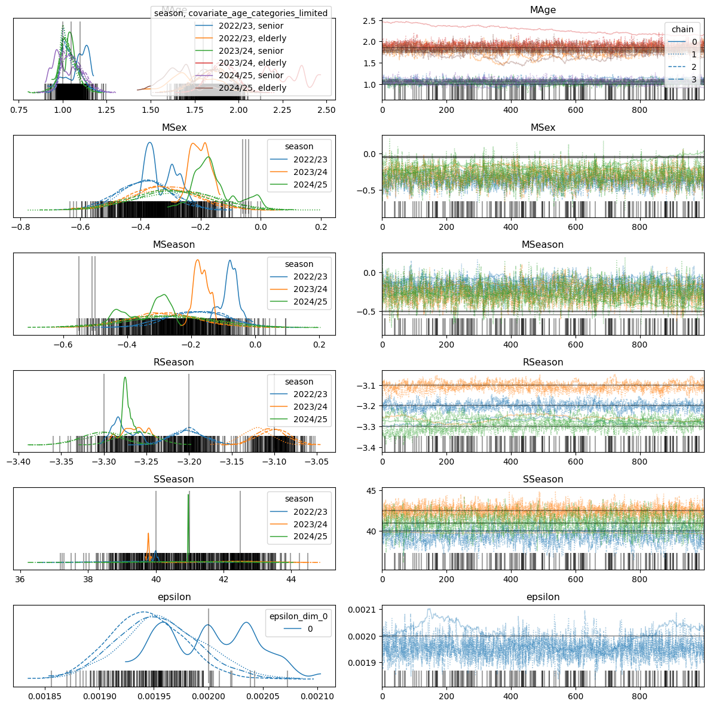
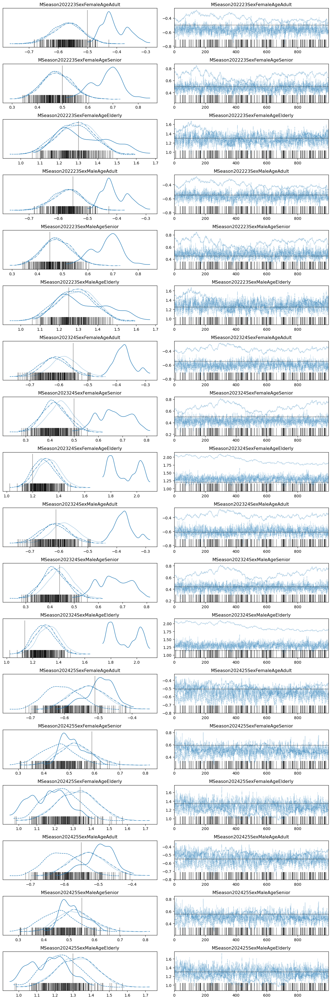
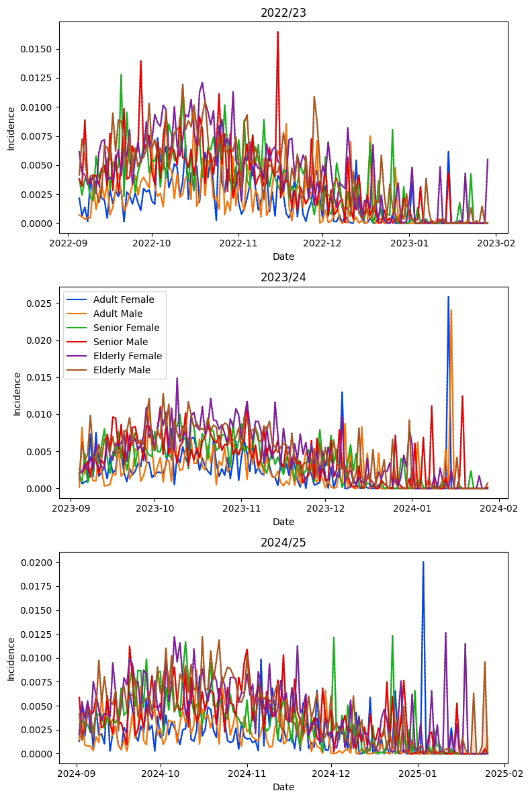
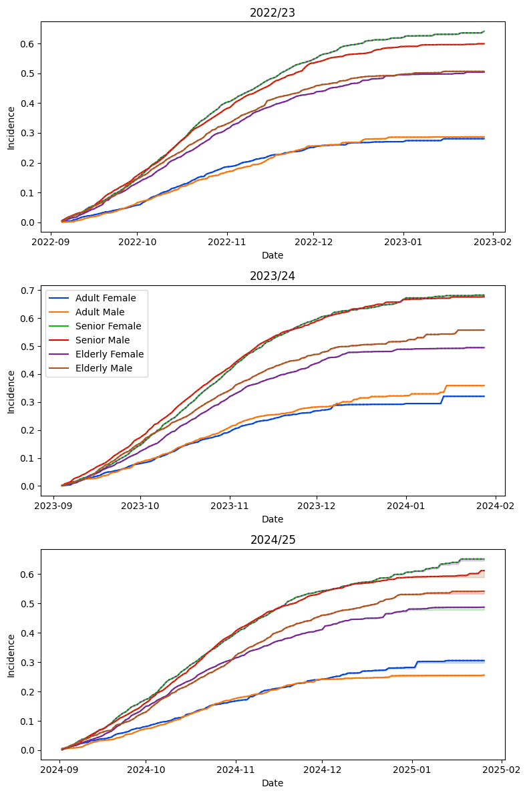

Synthetic Data Daily
# Add graphviz to path
import os
os.environ["PATH"] = os.environ["PATH"] + ":/opt/homebrew/bin"
# Imports
from datetime import date
from itertools import product
import arviz as az
import matplotlib.pyplot as plt
import numpy as np
import pandas as pd
from vaxflux.covariates import (
CovariateCategories,
GaussianRandomWalkCovariate,
PooledCovariate,
)
from vaxflux.curves import LogisticCurve
from vaxflux.data import sample_dataset
from vaxflux.dates import SeasonRange, daily_date_ranges
from vaxflux.uptake import SeasonalUptakeModel
<vaxflux.curves.LogisticCurve at 0x333a87a40>
('m', 'r', 's')
range_days = 0
season_ranges = [
SeasonRange(
season="2022/23",
start_date=date(2022, 9, 5),
end_date=date(2023, 1, 29),
),
SeasonRange(
season="2023/24",
start_date=date(2023, 9, 4),
end_date=date(2024, 1, 28),
),
SeasonRange(
season="2024/25",
start_date=date(2024, 9, 2),
end_date=date(2025, 1, 26),
),
]
date_ranges = daily_date_ranges(season_ranges, range_days=range_days)
sex_cov = CovariateCategories(covariate="sex", categories=("female", "male"))
age_cov = CovariateCategories(
covariate="age",
categories=("adult", "senior", "elderly"),
)
params = []
params_grid = {
"2022/23": {
"m": -0.5,
"r": -3.2,
"s": 40.0,
"male": {
"m": -0.05,
},
"senior": {
"m": 1.0,
},
"elderly": {
"m": 1.8,
},
},
"2023/24": {
"m": -0.55,
"r": -3.1,
"s": 42.5,
"male": {
"m": -0.06,
},
"senior": {
"m": 1.05,
},
"elderly": {
"m": 1.75,
},
},
"2024/25": {
"m": -0.51,
"r": -3.3,
"s": 41.0,
"male": {
"m": -0.04,
},
"senior": {
"m": 1.1,
},
"elderly": {
"m": 1.85,
},
},
}
for curve_param in logistic_curve.parameters:
for season_range in season_ranges:
for sex_category in sex_cov.categories:
for age_category in age_cov.categories:
season_params = params_grid[season_range.season]
param_value = (
season_params[curve_param]
+ season_params.get(sex_category, {}).get(curve_param, 0)
+ season_params.get(age_category, {}).get(curve_param, 0)
)
params.append(
(
curve_param,
season_range.season,
sex_category,
age_category,
param_value,
),
)
[('m', '2022/23', 'female', 'adult', -0.5),
('m', '2022/23', 'female', 'senior', 0.5),
('m', '2022/23', 'female', 'elderly', 1.3),
('m', '2022/23', 'male', 'adult', -0.55),
('m', '2022/23', 'male', 'senior', 0.44999999999999996),
('m', '2022/23', 'male', 'elderly', 1.25),
('m', '2023/24', 'female', 'adult', -0.55),
('m', '2023/24', 'female', 'senior', 0.5),
('m', '2023/24', 'female', 'elderly', 1.2),
('m', '2023/24', 'male', 'adult', -0.6100000000000001),
('m', '2023/24', 'male', 'senior', 0.43999999999999995),
('m', '2023/24', 'male', 'elderly', 1.14),
('m', '2024/25', 'female', 'adult', -0.51),
('m', '2024/25', 'female', 'senior', 0.5900000000000001),
('m', '2024/25', 'female', 'elderly', 1.34),
('m', '2024/25', 'male', 'adult', -0.55),
('m', '2024/25', 'male', 'senior', 0.55),
('m', '2024/25', 'male', 'elderly', 1.3),
('r', '2022/23', 'female', 'adult', -3.2),
('r', '2022/23', 'female', 'senior', -3.2),
('r', '2022/23', 'female', 'elderly', -3.2),
('r', '2022/23', 'male', 'adult', -3.2),
('r', '2022/23', 'male', 'senior', -3.2),
('r', '2022/23', 'male', 'elderly', -3.2),
('r', '2023/24', 'female', 'adult', -3.1),
('r', '2023/24', 'female', 'senior', -3.1),
('r', '2023/24', 'female', 'elderly', -3.1),
('r', '2023/24', 'male', 'adult', -3.1),
('r', '2023/24', 'male', 'senior', -3.1),
('r', '2023/24', 'male', 'elderly', -3.1),
('r', '2024/25', 'female', 'adult', -3.3),
('r', '2024/25', 'female', 'senior', -3.3),
('r', '2024/25', 'female', 'elderly', -3.3),
('r', '2024/25', 'male', 'adult', -3.3),
('r', '2024/25', 'male', 'senior', -3.3),
('r', '2024/25', 'male', 'elderly', -3.3),
('s', '2022/23', 'female', 'adult', 40.0),
('s', '2022/23', 'female', 'senior', 40.0),
('s', '2022/23', 'female', 'elderly', 40.0),
('s', '2022/23', 'male', 'adult', 40.0),
('s', '2022/23', 'male', 'senior', 40.0),
('s', '2022/23', 'male', 'elderly', 40.0),
('s', '2023/24', 'female', 'adult', 42.5),
('s', '2023/24', 'female', 'senior', 42.5),
('s', '2023/24', 'female', 'elderly', 42.5),
('s', '2023/24', 'male', 'adult', 42.5),
('s', '2023/24', 'male', 'senior', 42.5),
('s', '2023/24', 'male', 'elderly', 42.5),
('s', '2024/25', 'female', 'adult', 41.0),
('s', '2024/25', 'female', 'senior', 41.0),
('s', '2024/25', 'female', 'elderly', 41.0),
('s', '2024/25', 'male', 'adult', 41.0),
('s', '2024/25', 'male', 'senior', 41.0),
('s', '2024/25', 'male', 'elderly', 41.0)]
observations = sample_dataset(
logistic_curve,
season_ranges,
date_ranges,
[sex_cov, age_cov],
params,
0.002,
)
observations
| season | season_start_date | season_end_date | start_date | end_date | report_date | sex | age | type | value | |
|---|---|---|---|---|---|---|---|---|---|---|
| 0 | 2022/23 | 2022-09-05 | 2023-01-29 | 2022-09-05 | 2022-09-05 | 2022-09-05 | female | adult | incidence | 2.171651e-03 |
| 1 | 2022/23 | 2022-09-05 | 2023-01-29 | 2022-09-05 | 2022-09-05 | 2022-09-05 | female | senior | incidence | 3.810548e-03 |
| 2 | 2022/23 | 2022-09-05 | 2023-01-29 | 2022-09-05 | 2022-09-05 | 2022-09-05 | female | elderly | incidence | 6.153058e-03 |
| 3 | 2022/23 | 2022-09-05 | 2023-01-29 | 2022-09-05 | 2022-09-05 | 2022-09-05 | male | adult | incidence | 7.078232e-04 |
| 4 | 2022/23 | 2022-09-05 | 2023-01-29 | 2022-09-05 | 2022-09-05 | 2022-09-05 | male | senior | incidence | 3.809524e-03 |
| ... | ... | ... | ... | ... | ... | ... | ... | ... | ... | ... |
| 2641 | 2024/25 | 2024-09-02 | 2025-01-26 | 2025-01-26 | 2025-01-26 | 2025-01-26 | female | senior | incidence | 8.004958e-05 |
| 2642 | 2024/25 | 2024-09-02 | 2025-01-26 | 2025-01-26 | 2025-01-26 | 2025-01-26 | female | elderly | incidence | 7.571909e-10 |
| 2643 | 2024/25 | 2024-09-02 | 2025-01-26 | 2025-01-26 | 2025-01-26 | 2025-01-26 | male | adult | incidence | 1.451985e-03 |
| 2644 | 2024/25 | 2024-09-02 | 2025-01-26 | 2025-01-26 | 2025-01-26 | 2025-01-26 | male | senior | incidence | 2.546029e-17 |
| 2645 | 2024/25 | 2024-09-02 | 2025-01-26 | 2025-01-26 | 2025-01-26 | 2025-01-26 | male | elderly | incidence | 1.332295e-21 |
2646 rows × 10 columns
fig, axes = plt.subplots(
nrows=len(season_ranges),
ncols=1,
figsize=(8, 12),
)
for i, season_range in enumerate(season_ranges):
ax = axes[i]
ax.set_title(season_range.season)
ax.set_xlabel("Date")
ax.set_ylabel("Incidence")
for age_category in age_cov.categories:
for sex_category in sex_cov.categories:
observations_subset = observations[
(observations["season"] == season_range.season)
& (observations["age"] == age_category)
& (observations["sex"] == sex_category)
]
x = [
el
for pair in zip(
observations_subset["start_date"].tolist(),
observations_subset["end_date"].tolist(),
strict=False,
)
for el in pair
]
y = [
el
for pair in zip(
observations_subset["value"].tolist(),
observations_subset["value"].tolist(),
strict=False,
)
for el in pair
]
ax.plot(x, y, label=f"{age_category.title()} {sex_category.title()}")
if i == (len(season_ranges) // 2):
ax.legend()
fig.tight_layout()
plt.show()

observations_prevalence = observations.copy()
observations_prevalence = observations_prevalence.sort_values(
[
"start_date",
"end_date",
"season",
"season_start_date",
"season_end_date",
"sex",
"age",
],
)
observations_prevalence["prevalence"] = (
observations_prevalence.groupby(["season", "sex", "age"])["value"]
.cumsum()
.reset_index()["value"]
)
observations_prevalence
| season | season_start_date | season_end_date | start_date | end_date | report_date | sex | age | type | value | prevalence | |
|---|---|---|---|---|---|---|---|---|---|---|---|
| 0 | 2022/23 | 2022-09-05 | 2023-01-29 | 2022-09-05 | 2022-09-05 | 2022-09-05 | female | adult | incidence | 2.171651e-03 | 0.002172 |
| 2 | 2022/23 | 2022-09-05 | 2023-01-29 | 2022-09-05 | 2022-09-05 | 2022-09-05 | female | elderly | incidence | 6.153058e-03 | 0.003811 |
| 1 | 2022/23 | 2022-09-05 | 2023-01-29 | 2022-09-05 | 2022-09-05 | 2022-09-05 | female | senior | incidence | 3.810548e-03 | 0.006153 |
| 3 | 2022/23 | 2022-09-05 | 2023-01-29 | 2022-09-05 | 2022-09-05 | 2022-09-05 | male | adult | incidence | 7.078232e-04 | 0.000708 |
| 5 | 2022/23 | 2022-09-05 | 2023-01-29 | 2022-09-05 | 2022-09-05 | 2022-09-05 | male | elderly | incidence | 4.150683e-03 | 0.003810 |
| ... | ... | ... | ... | ... | ... | ... | ... | ... | ... | ... | ... |
| 2642 | 2024/25 | 2024-09-02 | 2025-01-26 | 2025-01-26 | 2025-01-26 | 2025-01-26 | female | elderly | incidence | 7.571909e-10 | 0.487178 |
| 2641 | 2024/25 | 2024-09-02 | 2025-01-26 | 2025-01-26 | 2025-01-26 | 2025-01-26 | female | senior | incidence | 8.004958e-05 | 0.651234 |
| 2643 | 2024/25 | 2024-09-02 | 2025-01-26 | 2025-01-26 | 2025-01-26 | 2025-01-26 | male | adult | incidence | 1.451985e-03 | 0.256129 |
| 2645 | 2024/25 | 2024-09-02 | 2025-01-26 | 2025-01-26 | 2025-01-26 | 2025-01-26 | male | elderly | incidence | 1.332295e-21 | 0.541586 |
| 2644 | 2024/25 | 2024-09-02 | 2025-01-26 | 2025-01-26 | 2025-01-26 | 2025-01-26 | male | senior | incidence | 2.546029e-17 | 0.611905 |
2646 rows × 11 columns
fig, axes = plt.subplots(
nrows=len(season_ranges),
ncols=1,
figsize=(8, 12),
)
for i, season_range in enumerate(season_ranges):
ax = axes[i]
ax.set_title(season_range.season)
ax.set_xlabel("Date")
ax.set_ylabel("Prevalence")
for age_category in age_cov.categories:
for sex_category in sex_cov.categories:
observations_subset = observations_prevalence[
(observations_prevalence["season"] == season_range.season)
& (observations_prevalence["age"] == age_category)
& (observations_prevalence["sex"] == sex_category)
]
x = [
el
for pair in zip(
observations_subset["start_date"].tolist(),
observations_subset["end_date"].tolist(),
strict=False,
)
for el in pair
]
y = [
el
for pair in zip(
observations_subset["prevalence"].tolist(),
observations_subset["prevalence"].tolist(),
strict=False,
)
for el in pair
]
ax.plot(x, y, label=f"{age_category.title()} {sex_category.title()}")
if i == (len(season_ranges) // 2):
ax.legend()
fig.tight_layout()
plt.show()

model = SeasonalUptakeModel(
logistic_curve,
[
PooledCovariate(
parameter="m",
covariate=None,
distribution="Normal",
distribution_kwargs={"mu": -0.5, "sigma": 0.25},
),
PooledCovariate(
parameter="r",
covariate=None,
distribution="Normal",
distribution_kwargs={"mu": -3.0, "sigma": 0.5},
),
PooledCovariate(
parameter="s",
covariate=None,
distribution="Normal",
distribution_kwargs={"mu": 40.0, "sigma": 5.0},
),
GaussianRandomWalkCovariate(
parameter="m",
covariate="age",
init_mu=[1.0, 2.0],
mu=2 * [0.0],
sigma=2 * [0.25],
eta=2.0,
),
GaussianRandomWalkCovariate(
parameter="m",
covariate="sex",
init_mu=-0.5,
mu=0.0,
sigma=0.1,
),
],
observations=observations,
covariate_categories=[sex_cov, age_cov],
season_ranges=season_ranges,
date_ranges=date_ranges,
epsilon=0.01,
# Custom keyword arguments
constrain_prevalence=False,
observation_sigma=1e-5,
pooled_epsilon=True,
)
model
<vaxflux.uptake.SeasonalUptakeModel at 0x3380582c0>
<vaxflux.uptake.SeasonalUptakeModel at 0x3380582c0>
Running window adaptation
100.00% [4000/4000 00:00<?]
100.00% [4000/4000 00:00<?]
100.00% [4000/4000 00:00<?]
100.00% [4000/4000 00:00<?]
100.00% [1000/1000 00:00<?]
100.00% [1000/1000 00:00<?]
100.00% [1000/1000 00:00<?]
100.00% [1000/1000 00:00<?]
There were 218 divergences after tuning. Increase `target_accept` or reparameterize.
The rhat statistic is larger than 1.01 for some parameters. This indicates problems during sampling. See https://arxiv.org/abs/1903.08008 for details
The effective sample size per chain is smaller than 100 for some parameters. A higher number is needed for reliable rhat and ess computation. See https://arxiv.org/abs/1903.08008 for details
<vaxflux.uptake.SeasonalUptakeModel at 0x3380582c0>
az.plot_trace(
model._trace, # noqa: SLF001
var_names=["MAge", "MSex", "MSeason", "RSeason", "SSeason", "epsilon"],
lines=[
("MAge", {}, [1.0, 1.8, 1.05, 1.75, 1.1, 1.85]),
("MSex", {}, [-0.05, -0.06, -0.04]),
("MSeason", {}, [-0.5, -0.55, -0.51]),
("RSeason", {}, [-3.2, -3.1, -3.3]),
("SSeason", {}, [40.0, 42.5, 41.0]),
("epsilon", {}, [0.002]),
],
legend=True,
compact=True,
)
plt.tight_layout()

var_names_and_lines = {
(
f"{p[0].title()}Season{p[1].replace('/', '').title()}"
f"Sex{p[2].title()}Age{p[3].title()}"
): p[4]
for p in params
if p[0] == "m"
}
az.plot_trace(
model._trace, # noqa: SLF001
var_names=list(var_names_and_lines.keys()),
lines=[(k, {}, v) for k, v in var_names_and_lines.items()],
)
plt.tight_layout()

| draw | chain | season | date | sex | age | type | value | |
|---|---|---|---|---|---|---|---|---|
| 0 | 0 | 0 | 2022/23 | 2022-09-05 | female | adult | incidence | 0.002169 |
| 1 | 0 | 0 | 2022/23 | 2022-09-06 | female | adult | incidence | 0.000639 |
| 2 | 0 | 0 | 2022/23 | 2022-09-07 | female | adult | incidence | 0.001370 |
| 3 | 0 | 0 | 2022/23 | 2022-09-08 | female | adult | incidence | 0.000164 |
| 4 | 0 | 0 | 2022/23 | 2022-09-09 | female | adult | incidence | 0.003847 |
| 5 | 0 | 0 | 2022/23 | 2022-09-10 | female | adult | incidence | 0.002397 |
| 6 | 0 | 0 | 2022/23 | 2022-09-11 | female | adult | incidence | 0.003633 |
| 7 | 0 | 0 | 2022/23 | 2022-09-12 | female | adult | incidence | 0.003497 |
| 8 | 0 | 0 | 2022/23 | 2022-09-13 | female | adult | incidence | 0.002166 |
| 9 | 0 | 0 | 2022/23 | 2022-09-14 | female | adult | incidence | 0.001997 |
<class 'pandas.core.frame.DataFrame'>
Index: 10584000 entries, 0 to 587999
Data columns (total 8 columns):
# Column Dtype
--- ------ -----
0 draw int64
1 chain int64
2 season string
3 date datetime64[ns]
4 sex string
5 age string
6 type string
7 value float64
dtypes: datetime64[ns](1), float64(1), int64(2), string(4)
memory usage: 726.7 MB
posterior_df = (
posterior_df.drop(columns=["type"])
.rename(columns={"value": "incidence"})
.sort_values(["draw", "chain", "season", "sex", "age", "date"])
)
posterior_df["prevalence"] = posterior_df.groupby(
["draw", "chain", "season", "sex", "age"],
)["incidence"].cumsum()
posterior_df
| draw | chain | season | date | sex | age | incidence | prevalence | |
|---|---|---|---|---|---|---|---|---|
| 0 | 0 | 0 | 2022/23 | 2022-09-05 | female | adult | 2.168832e-03 | 0.002169 |
| 1 | 0 | 0 | 2022/23 | 2022-09-06 | female | adult | 6.392653e-04 | 0.002808 |
| 2 | 0 | 0 | 2022/23 | 2022-09-07 | female | adult | 1.369775e-03 | 0.004178 |
| 3 | 0 | 0 | 2022/23 | 2022-09-08 | female | adult | 1.643747e-04 | 0.004342 |
| 4 | 0 | 0 | 2022/23 | 2022-09-09 | female | adult | 3.846575e-03 | 0.008189 |
| ... | ... | ... | ... | ... | ... | ... | ... | ... |
| 587995 | 999 | 3 | 2024/25 | 2025-01-22 | male | senior | 5.219037e-10 | 0.540987 |
| 587996 | 999 | 3 | 2024/25 | 2025-01-23 | male | senior | 1.706550e-07 | 0.540987 |
| 587997 | 999 | 3 | 2024/25 | 2025-01-24 | male | senior | 6.019571e-08 | 0.540987 |
| 587998 | 999 | 3 | 2024/25 | 2025-01-25 | male | senior | 5.071451e-04 | 0.541494 |
| 587999 | 999 | 3 | 2024/25 | 2025-01-26 | male | senior | 5.775311e-08 | 0.541494 |
10584000 rows × 8 columns
range_days_to_freq = {
6: "W",
}
if range_days > 0:
if (freq := range_days_to_freq.get(range_days)) is None:
msg = (
f"Range days {range_days} not supported, "
f"please add to `range_days_to_freq` dictionary."
)
raise RuntimeError(
msg,
)
incidence_posterior_df = (
posterior_df.groupby(
[
"chain",
"draw",
"season",
pd.Grouper(key="date", freq=freq),
"sex",
"age",
],
)["incidence"]
.sum()
.reset_index()
)
incidence_posterior_df = (
incidence_posterior_df if range_days > 0 else posterior_df
).rename(columns={"date": "end_date"})
incidence_posterior_df["start_date"] = incidence_posterior_df[
"end_date"
] - pd.Timedelta(days=range_days)
incidence_posterior_df = (
incidence_posterior_df.groupby(["season", "start_date", "end_date", "sex", "age"])[
"incidence"
]
.agg(
[
lambda x: np.quantile(x, 0.005),
lambda x: np.quantile(x, 0.5),
lambda x: np.quantile(x, 0.995),
],
)
.reset_index()
)
incidence_posterior_df = incidence_posterior_df.rename(
columns={
incidence_posterior_df.columns[-3]: "lower",
incidence_posterior_df.columns[-2]: "median",
incidence_posterior_df.columns[-1]: "upper",
},
)
incidence_posterior_df
| season | start_date | end_date | sex | age | lower | median | upper | |
|---|---|---|---|---|---|---|---|---|
| 0 | 2022/23 | 2022-09-05 | 2022-09-05 | female | adult | 2.146953e-03 | 2.173166e-03 | 0.002195 |
| 1 | 2022/23 | 2022-09-05 | 2022-09-05 | female | elderly | 6.128953e-03 | 6.151973e-03 | 0.006178 |
| 2 | 2022/23 | 2022-09-05 | 2022-09-05 | female | senior | 3.786094e-03 | 3.808901e-03 | 0.003835 |
| 3 | 2022/23 | 2022-09-05 | 2022-09-05 | male | adult | 6.826723e-04 | 7.042661e-04 | 0.000733 |
| 4 | 2022/23 | 2022-09-05 | 2022-09-05 | male | elderly | 4.126121e-03 | 4.149464e-03 | 0.004175 |
| ... | ... | ... | ... | ... | ... | ... | ... | ... |
| 2641 | 2024/25 | 2025-01-26 | 2025-01-26 | female | elderly | 1.671378e-27 | 2.165963e-08 | 0.000015 |
| 2642 | 2024/25 | 2025-01-26 | 2025-01-26 | female | senior | 5.514598e-08 | 7.453464e-05 | 0.000104 |
| 2643 | 2024/25 | 2025-01-26 | 2025-01-26 | male | adult | 1.292158e-08 | 1.448153e-03 | 0.001475 |
| 2644 | 2024/25 | 2025-01-26 | 2025-01-26 | male | elderly | 1.200881e-33 | 3.990775e-08 | 0.000014 |
| 2645 | 2024/25 | 2025-01-26 | 2025-01-26 | male | senior | 6.255730e-49 | 1.214770e-08 | 0.000013 |
2646 rows × 8 columns
fig, axes = plt.subplots(
nrows=len(season_ranges),
ncols=1,
figsize=(8, 12),
)
colors = (
"xkcd:blue",
"xkcd:orange",
"xkcd:green",
"xkcd:red",
"xkcd:purple",
"xkcd:sienna",
)
colors_map = {
hash((age_category, sex_category)): color
for color, (age_category, sex_category) in zip(
colors,
product(age_cov.categories, sex_cov.categories),
strict=False,
)
}
for i, season_range in enumerate(season_ranges):
ax = axes[i]
ax.set_title(season_range.season)
ax.set_xlabel("Date")
ax.set_ylabel("Incidence")
for age_category in age_cov.categories:
for sex_category in sex_cov.categories:
color = colors_map[hash((age_category, sex_category))]
observations_subset = observations[
(observations["season"] == season_range.season)
& (observations["age"] == age_category)
& (observations["sex"] == sex_category)
]
x = [
el
for pair in zip(
observations_subset["start_date"].tolist(),
observations_subset["end_date"].tolist(),
strict=False,
)
for el in pair
]
y = [
el
for pair in zip(
observations_subset["value"].tolist(),
observations_subset["value"].tolist(),
strict=False,
)
for el in pair
]
ax.plot(
x,
y,
label=f"{age_category.title()} {sex_category.title()}",
color=color,
linestyle="-",
)
summary_posterior_subset = incidence_posterior_df[
(incidence_posterior_df["season"] == season_range.season)
& (incidence_posterior_df["age"] == age_category)
& (incidence_posterior_df["sex"] == sex_category)
]
x = [
el
for pair in zip(
summary_posterior_subset["start_date"].tolist(),
summary_posterior_subset["end_date"].tolist(),
strict=False,
)
for el in pair
]
y = [
el
for pair in zip(
summary_posterior_subset["median"].tolist(),
summary_posterior_subset["median"].tolist(),
strict=False,
)
for el in pair
]
ax.plot(x, y, color=color, linestyle=":")
y1 = [
el
for pair in zip(
summary_posterior_subset["lower"].tolist(),
summary_posterior_subset["lower"].tolist(),
strict=False,
)
for el in pair
]
y2 = [
el
for pair in zip(
summary_posterior_subset["upper"].tolist(),
summary_posterior_subset["upper"].tolist(),
strict=False,
)
for el in pair
]
ax.fill_between(x, y1, y2, color=color, alpha=0.2)
if i == (len(season_ranges) // 2):
ax.legend()
fig.tight_layout()
plt.show()

prevalence_posterior_df = (
posterior_df.groupby(["season", "date", "sex", "age"])["prevalence"]
.agg(
[
lambda x: np.quantile(x, 0.005),
lambda x: np.quantile(x, 0.5),
lambda x: np.quantile(x, 0.995),
],
)
.reset_index()
)
prevalence_posterior_df = prevalence_posterior_df.rename(
columns={
prevalence_posterior_df.columns[-3]: "lower",
prevalence_posterior_df.columns[-2]: "median",
prevalence_posterior_df.columns[-1]: "upper",
},
)
prevalence_posterior_df
| season | date | sex | age | lower | median | upper | |
|---|---|---|---|---|---|---|---|
| 0 | 2022/23 | 2022-09-05 | female | adult | 0.002147 | 0.002173 | 0.002195 |
| 1 | 2022/23 | 2022-09-05 | female | elderly | 0.006129 | 0.006152 | 0.006178 |
| 2 | 2022/23 | 2022-09-05 | female | senior | 0.003786 | 0.003809 | 0.003835 |
| 3 | 2022/23 | 2022-09-05 | male | adult | 0.000683 | 0.000704 | 0.000733 |
| 4 | 2022/23 | 2022-09-05 | male | elderly | 0.004126 | 0.004149 | 0.004175 |
| ... | ... | ... | ... | ... | ... | ... | ... |
| 2641 | 2024/25 | 2025-01-26 | female | elderly | 0.645518 | 0.651179 | 0.651517 |
| 2642 | 2024/25 | 2025-01-26 | female | senior | 0.477871 | 0.487105 | 0.487423 |
| 2643 | 2024/25 | 2025-01-26 | male | adult | 0.251132 | 0.256072 | 0.256389 |
| 2644 | 2024/25 | 2025-01-26 | male | elderly | 0.589073 | 0.611855 | 0.612186 |
| 2645 | 2024/25 | 2025-01-26 | male | senior | 0.532916 | 0.541523 | 0.541886 |
2646 rows × 7 columns
fig, axes = plt.subplots(
nrows=len(season_ranges),
ncols=1,
figsize=(8, 12),
)
colors = (
"xkcd:blue",
"xkcd:orange",
"xkcd:green",
"xkcd:red",
"xkcd:purple",
"xkcd:sienna",
)
colors_map = {
hash((age_category, sex_category)): color
for color, (age_category, sex_category) in zip(
colors,
product(age_cov.categories, sex_cov.categories),
strict=False,
)
}
for i, season_range in enumerate(season_ranges):
ax = axes[i]
ax.set_title(season_range.season)
ax.set_xlabel("Date")
ax.set_ylabel("Incidence")
for age_category in age_cov.categories:
for sex_category in sex_cov.categories:
color = colors_map[hash((age_category, sex_category))]
observations_subset = observations_prevalence[
(observations_prevalence["season"] == season_range.season)
& (observations_prevalence["age"] == age_category)
& (observations_prevalence["sex"] == sex_category)
]
x = [
el
for pair in zip(
observations_subset["start_date"].tolist(),
observations_subset["end_date"].tolist(),
strict=False,
)
for el in pair
]
y = [
el
for pair in zip(
observations_subset["prevalence"].tolist(),
observations_subset["prevalence"].tolist(),
strict=False,
)
for el in pair
]
ax.plot(
x,
y,
label=f"{age_category.title()} {sex_category.title()}",
color=color,
linestyle="-",
)
summary_posterior_subset = prevalence_posterior_df[
(prevalence_posterior_df["season"] == season_range.season)
& (prevalence_posterior_df["age"] == age_category)
& (prevalence_posterior_df["sex"] == sex_category)
]
x = summary_posterior_subset["date"].tolist()
y = summary_posterior_subset["median"].tolist()
ax.plot(x, y, color=color, linestyle=":")
y1 = summary_posterior_subset["lower"].tolist()
y2 = summary_posterior_subset["upper"].tolist()
ax.fill_between(x, y1, y2, color=color, alpha=0.2)
if i == (len(season_ranges) // 2):
ax.legend()
fig.tight_layout()
plt.show()
